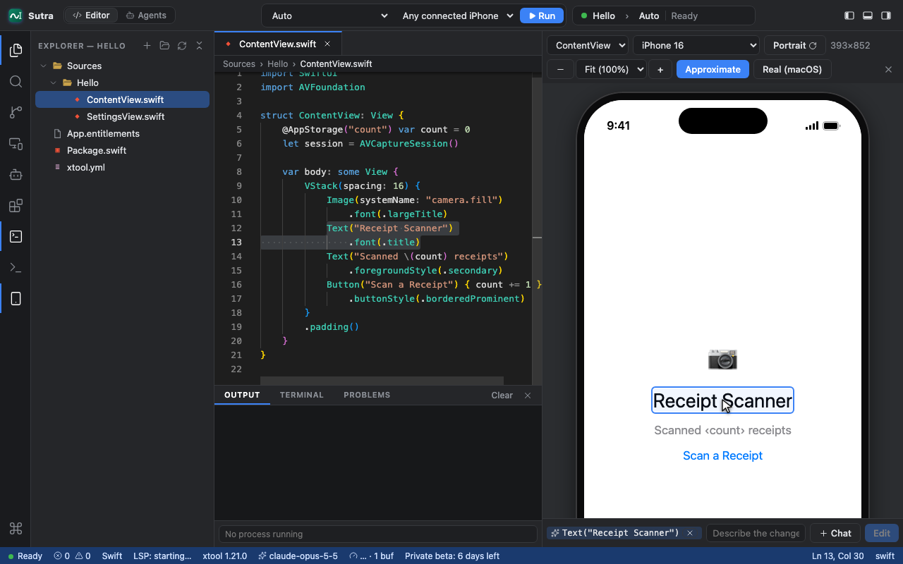
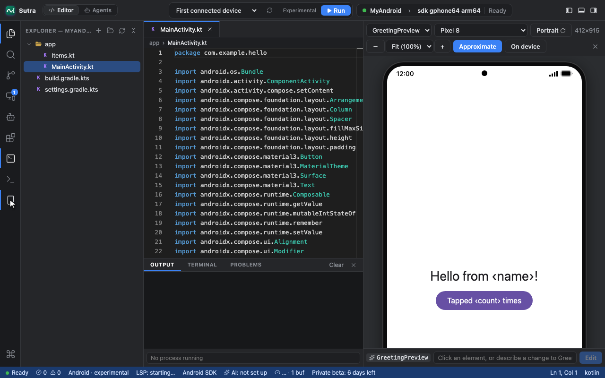
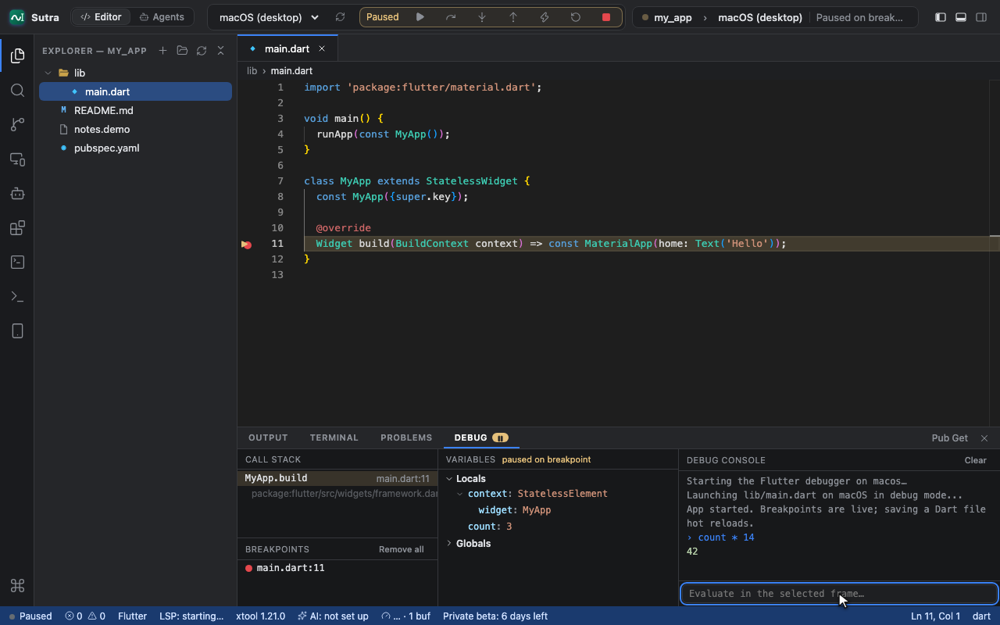
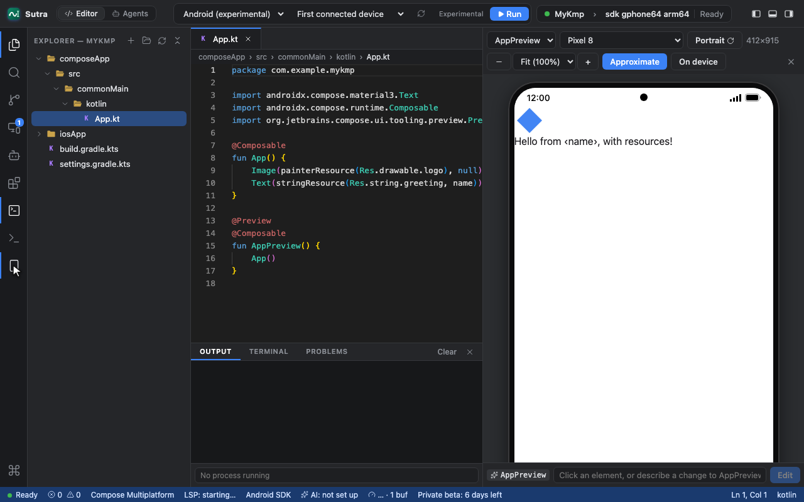
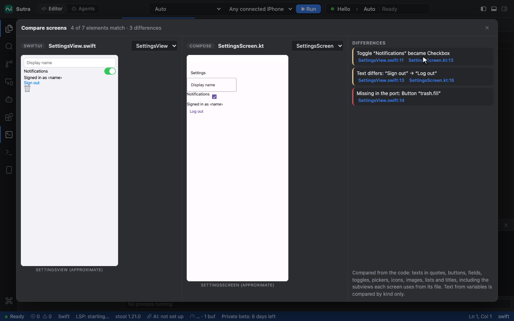

One IDE for SwiftUI, Jetpack Compose, Flutter and Compose Multiplatform
Short videos of each Sutra feature, recorded in the app itself, with the steps to try it. Sutra is in private beta on macOS.

Swift and SwiftUI iOS Live SwiftUI previews, playgrounds, building to an iPhone with xtool (no Xcode needed), and help with signing and App Store uploads. 7 tutorials →
Kotlin and Jetpack Compose Android Compose previews (approximate and on a real device), running on phones and emulators, Kotlin playgrounds, and a stability check for recomposition. 4 tutorials →
Dart and Flutter Flutter Live widget previews, a full debugger with hot reload, and widget rebuild counts in the editor. 2 tutorials →
Kotlin Multiplatform Compose Multiplatform One project for Android, iOS, desktop and web, with previews of shared UI and its resources. 1 tutorial →
SwiftUI, Compose and Flutter together Across platforms and AI Keep your app's platforms in step, and hand work to AI agents you can review. 3 tutorials →